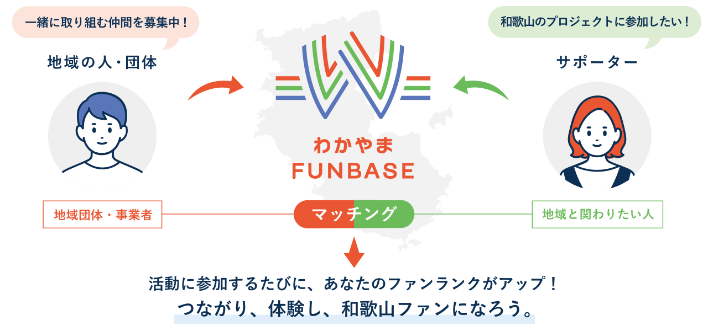

田中 さくら さん
東京 → 有田市 | 農業
「週末だけ農業体験から始めて、気づいたら移住していました。人の温かさに惹かれました。」


和歌山と、出会う。人と、つながる。
わかやまFUNBASEは、和歌山県の多様な地域課題に挑む
プロジェクトと人材をつなぐ関係人口創出プラットフォームです。

わかやまFUNBASEは、和歌山県の地域団体・事業者と、地域と関わりたいサポーターをつなぐマッチングプラットフォームです。
活動に参加するたびに、あなたの「ファンランク」がアップ。
つながり、体験し、和歌山ファンになろう。